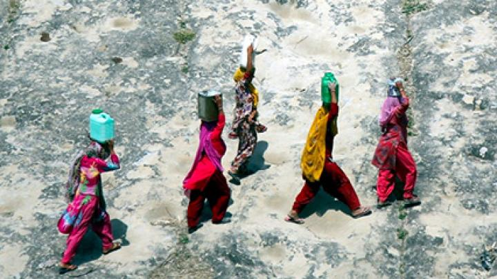
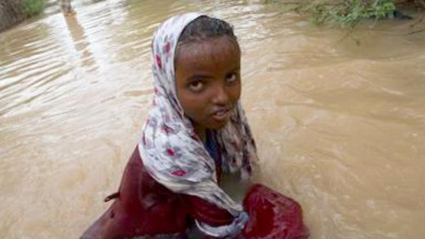
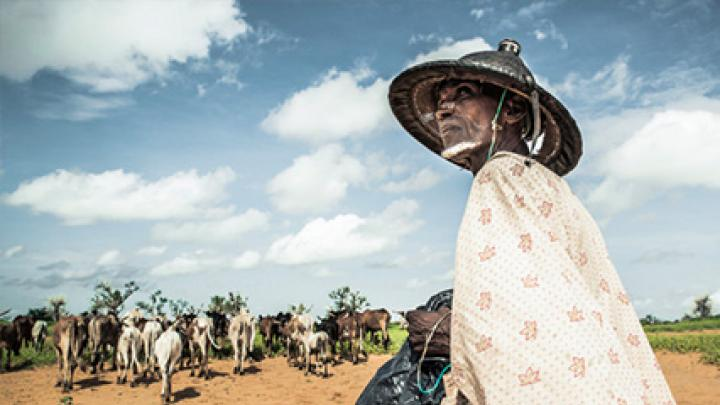
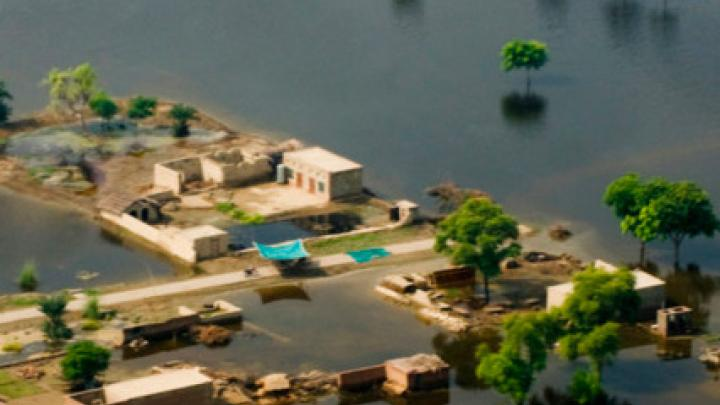

Женщины и девочки в условиях чрезвычайной ситуации в области климата.
Климатический кризис касается каждого, но от его экологических, экономических и социальных последствий больше всего страдают те, кто оказался в уязвимом положении, особенно женщины и девочки
[узнайте больше]

Вынужденные перемещения людей и чрезвычайная ситуация в области климата.
Чрезвычайная климатическая ситуация является определяющей для нашего времени, и вынужденное перемещение — одно из её наиболее разрушительных последствий
[узнайте больше]

Конфликты и чрезвычайная ситуация в области климата.
Пострадавшие от конфликтов люди —
одни из самых уязвимых в ситуации климатического кризиса, а также одни из тех, кто меньше всего получает поддержку в рамках мер по борьбе с изменением климата
[узнайте больше]

Продовольственная безопасность и чрезвычайная ситуация в области климата.
Более частые и сильные наводнения, засухи и ураганы могут быстро перерасти в продовольственный кризис
[узнайте больше]
